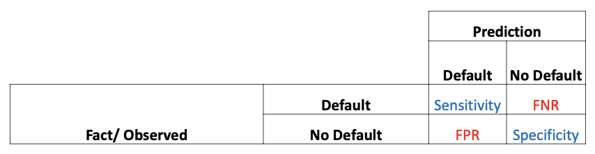
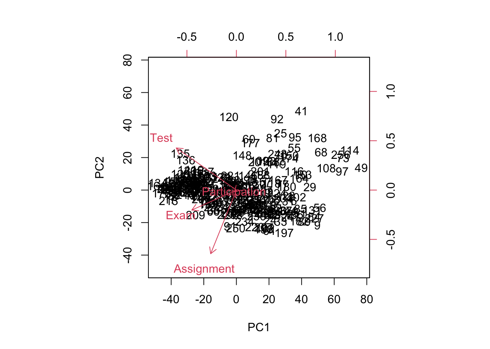

| Areas | Statistical_Learning | Machine_Learning |
|---|---|---|
| Scope | Subfield of Statistics | Subfield of AI |
| Focus | Models building and their interpretability | Prediction accuracy |
| Data | Use survey methods / experimental study to collect random data with a particular purpose or objective - understand ideas behind various techniques and accurately assess performance of each technique | Collect large or big data set in a routine way - Focuses on large scale applications |
| Approach | Models with predefined assumptions and all data. Interpretable but holds limitations in capturing complex patterns | Use training data to build the model with no assumptions and use a test set to evaluation model |
| Concern | Parameter estimation and hypothesis testing at a certain error rate | Bias-variance trade-off and prediction errors |
| Application | Econometrics, biostatistics, finance, etc | Natural language proccessing, face recognition, traffic prediction, where predictive accuracy and pattern recognition are paramount |
ML_Notes
1 Lesson 1: Overview of SL & ML
| Areas | Supervised_Learning | Unsupervised_Learning |
|---|---|---|
| Focus | Focus on outcome measurement, Y (dependent variable) | No outcome measurement, Y, just a set of predictors |
| Variables | Use p predictor measurements (independent variables) | Find features of X that behave similarly or find linear combinations of X with the most variation |
| Purpose | For regression / classification problems | Use unsupervised learning as first step of supervised learning |
| Concern | - | Difficult to evaluate the performance of approaches because of no outcome measurement for comparisons |
1.1 Some Basic Terminologies
Reducible Error \[ f(X) - \hat{f}(X) \] where \(f(X)\) is the true value while \(\hat{f}(x)\) is the predicted value
- We seek to find the most appropriate statistical learning technique that minimises the reducible error
Irreducible Error \[ \epsilon = Y - f(X) \]
- \(\epsilon\) cannot be predicted using \(X\)
Total Errors The average of the squared difference between the predicted \(Y\) and actual value \(Y\) is \[ E(Y-\hat{Y})^2 = E[f(X) +\epsilon -\hat{f}(X)]^2 + Var(\epsilon) \]
\[ E(Y-\hat{Y})^2 = [f(X)-\hat{f}(X)]^2 + Var(\epsilon) \]
Estimation of \(f\)
- Parametric
- Assumes a function form/shape of \(f\)
- Non-parametric
- Does not assume the shape of \(f\)
- Parametric
Training & Testing Data
Objectives:
- Accurately predict unseen test cases
- Understand which independent variables affect the dependent variable, and how
- Assess quality of predictions or/and inferences
Prediction Accuracy VS Interpretability
- More restrictive (less flexibility) means more interpretable in inference objective
- Less flexibility, it is likely bias is higher. Vice Versa
- Less flexibility, it is likely variance is smaller. Vice Versa
- For prediction objective, less restrictive does not always yield the best model.
- More restrictive (less flexibility) means more interpretable in inference objective

Bias Variance Trade Off\[ E(y_0-\hat{f}(x_0))^2 = Var(\hat{f}(x_0))+[Bias(\hat{f}(x_0))]^2+Var(\epsilon) \]
- Bias: Error that is introduced by approximating a real-life situation with a much simpler model \(\hat{f}\)
- Variance: Amount by which \(\hat{f}\) would change if we estimated it again using a different training data set
- Relationship with flexibility: As flexibility increases, its variance increases while its bias decreases.

Validation
- Model is fitted on a training data set and tested with a validation set.
- The validation test set provides a validation-set error which provides an estimate of the test error
K-Fold Cross Validation
- Widely used approach for estimating test error
- Randomly divide the data into \(K\) equal-sized parts
- Results from each K parts are combined at the end
Validation and Cross-Validation
- Use cross-validation to identify the parameter values for a given approach
- Use validation to choose best approach among all the considered approaches
As the foundation of this course is from Statistical learning with R, refer to Statistical Learning Notes where the various codes can be obtained.
1.2 Some basic codes:
- Multiple regression model + Quadratic variables
# Carseats example in textbook
library(ISLR)
attach(Carseats)
names(Carseats) [1] "Sales" "CompPrice" "Income" "Advertising" "Population"
[6] "Price" "ShelveLoc" "Age" "Education" "Urban"
[11] "US" summary(Carseats) Sales CompPrice Income Advertising
Min. : 0.000 Min. : 77 Min. : 21.00 Min. : 0.000
1st Qu.: 5.390 1st Qu.:115 1st Qu.: 42.75 1st Qu.: 0.000
Median : 7.490 Median :125 Median : 69.00 Median : 5.000
Mean : 7.496 Mean :125 Mean : 68.66 Mean : 6.635
3rd Qu.: 9.320 3rd Qu.:135 3rd Qu.: 91.00 3rd Qu.:12.000
Max. :16.270 Max. :175 Max. :120.00 Max. :29.000
Population Price ShelveLoc Age Education
Min. : 10.0 Min. : 24.0 Bad : 96 Min. :25.00 Min. :10.0
1st Qu.:139.0 1st Qu.:100.0 Good : 85 1st Qu.:39.75 1st Qu.:12.0
Median :272.0 Median :117.0 Medium:219 Median :54.50 Median :14.0
Mean :264.8 Mean :115.8 Mean :53.32 Mean :13.9
3rd Qu.:398.5 3rd Qu.:131.0 3rd Qu.:66.00 3rd Qu.:16.0
Max. :509.0 Max. :191.0 Max. :80.00 Max. :18.0
Urban US
No :118 No :142
Yes:282 Yes:258
#multiple regression model including all independent variables
lm.carseat1=lm(Sales~., data=Carseats)
summary(lm.carseat1)
Call:
lm(formula = Sales ~ ., data = Carseats)
Residuals:
Min 1Q Median 3Q Max
-2.8692 -0.6908 0.0211 0.6636 3.4115
Coefficients:
Estimate Std. Error t value Pr(>|t|)
(Intercept) 5.6606231 0.6034487 9.380 < 2e-16 ***
CompPrice 0.0928153 0.0041477 22.378 < 2e-16 ***
Income 0.0158028 0.0018451 8.565 2.58e-16 ***
Advertising 0.1230951 0.0111237 11.066 < 2e-16 ***
Population 0.0002079 0.0003705 0.561 0.575
Price -0.0953579 0.0026711 -35.700 < 2e-16 ***
ShelveLocGood 4.8501827 0.1531100 31.678 < 2e-16 ***
ShelveLocMedium 1.9567148 0.1261056 15.516 < 2e-16 ***
Age -0.0460452 0.0031817 -14.472 < 2e-16 ***
Education -0.0211018 0.0197205 -1.070 0.285
UrbanYes 0.1228864 0.1129761 1.088 0.277
USYes -0.1840928 0.1498423 -1.229 0.220
---
Signif. codes: 0 '***' 0.001 '**' 0.01 '*' 0.05 '.' 0.1 ' ' 1
Residual standard error: 1.019 on 388 degrees of freedom
Multiple R-squared: 0.8734, Adjusted R-squared: 0.8698
F-statistic: 243.4 on 11 and 388 DF, p-value: < 2.2e-16# multiple regression model with significant factors
lm.carseat2=lm(Sales~CompPrice+Income+Advertising+Price+ShelveLoc+Age,
data=Carseats)
summary(lm.carseat2)
Call:
lm(formula = Sales ~ CompPrice + Income + Advertising + Price +
ShelveLoc + Age, data = Carseats)
Residuals:
Min 1Q Median 3Q Max
-2.7728 -0.6954 0.0282 0.6732 3.3292
Coefficients:
Estimate Std. Error t value Pr(>|t|)
(Intercept) 5.475226 0.505005 10.84 <2e-16 ***
CompPrice 0.092571 0.004123 22.45 <2e-16 ***
Income 0.015785 0.001838 8.59 <2e-16 ***
Advertising 0.115903 0.007724 15.01 <2e-16 ***
Price -0.095319 0.002670 -35.70 <2e-16 ***
ShelveLocGood 4.835675 0.152499 31.71 <2e-16 ***
ShelveLocMedium 1.951993 0.125375 15.57 <2e-16 ***
Age -0.046128 0.003177 -14.52 <2e-16 ***
---
Signif. codes: 0 '***' 0.001 '**' 0.01 '*' 0.05 '.' 0.1 ' ' 1
Residual standard error: 1.019 on 392 degrees of freedom
Multiple R-squared: 0.872, Adjusted R-squared: 0.8697
F-statistic: 381.4 on 7 and 392 DF, p-value: < 2.2e-16confint(lm.carseat2, level=0.95) 2.5 % 97.5 %
(Intercept) 4.48236820 6.46808427
CompPrice 0.08446498 0.10067795
Income 0.01217210 0.01939784
Advertising 0.10071856 0.13108825
Price -0.10056844 -0.09006946
ShelveLocGood 4.53585700 5.13549250
ShelveLocMedium 1.70550103 2.19848429
Age -0.05237301 -0.03988204predict(lm.carseat2,
data.frame(CompPrice=116, Income=80, Advertising=7,
Price=100, ShelveLoc="Good", Age=56),
interval="confidence",
level=.95) fit lwr upr
1 11.00828 10.77329 11.24326predict(lm.carseat2,
data.frame(CompPrice=116, Income=80, Advertising=7,
Price=100, ShelveLoc="Good", Age=56),
interval="prediction",
level=.95) fit lwr upr
1 11.00828 8.9903 13.02625# quadratic relationship
lm.carseat3=lm(Sales~CompPrice+Income+Advertising+
Price+ShelveLoc+Age+I(Price^2), data=Carseats)
summary(lm.carseat3)
Call:
lm(formula = Sales ~ CompPrice + Income + Advertising + Price +
ShelveLoc + Age + I(Price^2), data = Carseats)
Residuals:
Min 1Q Median 3Q Max
-2.7580 -0.7084 0.0344 0.6883 3.2802
Coefficients:
Estimate Std. Error t value Pr(>|t|)
(Intercept) 5.988e+00 8.756e-01 6.839 3.09e-11 ***
CompPrice 9.268e-02 4.129e-03 22.448 < 2e-16 ***
Income 1.577e-02 1.839e-03 8.576 2.32e-16 ***
Advertising 1.163e-01 7.744e-03 15.012 < 2e-16 ***
Price -1.050e-01 1.380e-02 -7.613 2.03e-13 ***
ShelveLocGood 4.832e+00 1.527e-01 31.645 < 2e-16 ***
ShelveLocMedium 1.953e+00 1.255e-01 15.564 < 2e-16 ***
Age -4.603e-02 3.182e-03 -14.466 < 2e-16 ***
I(Price^2) 4.227e-05 5.896e-05 0.717 0.474
---
Signif. codes: 0 '***' 0.001 '**' 0.01 '*' 0.05 '.' 0.1 ' ' 1
Residual standard error: 1.02 on 391 degrees of freedom
Multiple R-squared: 0.8722, Adjusted R-squared: 0.8695
F-statistic: 333.4 on 8 and 391 DF, p-value: < 2.2e-16- Code for train-test split for multiple regression
library(ISLR)
attach(Auto)
set.seed(3344)
Auto1 <- Auto[,1:8]
train <- sample(1:nrow(Auto1), 200) #sample 200 out of the whole sample size
test <- -train
auto.train <- Auto1[train,]
auto.test <- Auto1[test,]
# multiple regression model
lm.fit <- lm(mpg~., data=auto.train)
lm.pred <- predict(lm.fit, auto.test)
mse.mrm <- mean((auto.test$mpg-lm.pred)^2)
mse.mrm[1] 12.55657- Lasso & Ridge Regularization
#Lasso
library(glmnet)
train.x <- model.matrix(mpg~., data=auto.train)[,-1] # Remove the intercept
train.y <-auto.train$mpg
test.x <- model.matrix(mpg~., data=auto.test)[,-1] # Remove the intercept
test.y <- auto.test$mpg
lasso.mod <- glmnet(train.x, train.y, alpha=1)
cv.out <- cv.glmnet(train.x, train.y, alpha=1,
nfolds = 10) # Default 10 Fold, change this for other fold value
lambda.lasso <- cv.out$lambda.min
lambda.lasso[1] 0.007414423lasso.pred <- predict(lasso.mod, newx=test.x, s=lambda.lasso)
mse.lasso <- mean((test.y-lasso.pred)^2)
mse.lasso[1] 12.52336#Ridge regression
ridge.mod <- glmnet(train.x, train.y, alpha=0)
cv.out <- cv.glmnet(train.x, train.y, alpha=0)
lambda.rr <- cv.out$lambda.min
lambda.rr[1] 0.6600431ridge.pred <- predict(ridge.mod, newx=test.x, s=lambda.rr)
mse.rr <- mean((test.y-ridge.pred)^2)
mse.rr[1] 13.00824After comparing all models above using the Auto Dataset, we have that Lasso is the best model.
Rebuild the model using all of the data:
x <- model.matrix(mpg~., data=Auto1)[,-1]
y <- Auto1$mpg
out.lasso <- glmnet(x,y, alpha=1)
lasso.m2 <- predict(out.lasso, type="coefficients", s=lambda.lasso)[1:8,]
lasso.m2[lasso.m2!=0] (Intercept) cylinders displacement horsepower weight
-17.226062638 -0.388797977 0.016409017 -0.015275841 -0.006357916
acceleration year origin
0.073666083 0.747775775 1.380164964 1.3 Classification Setting
Testing Error for Classification
Confusion Matrix

2 Lesson 2: Unsupervised Learning I
2.1 Principal Components Analysis (PCA)
What is it?
- A dimensionality reduction method by reducing the dimensionality of large data sets
- Finds a sequence of linear combinations of the variables that have maximal variance, and mutually uncorrelated
\[ X_1, X_2, …, X_{1000} \\ \text{The above is converted through PCA to output: } \\ Var(Y_1+Y_2) = Var(Y_1)+Var(Y_2)+2Cov(Y_1, Y_2) \]
- Reducing dimension comes at the expense of accuracy, but essentially to trade little accuracy for simplicity
- Low dimension data sets are easier to explore and visualize and makes analysing data points easier and faster for machine learning- Applications of PCA
Use the principal components:
- In understanding and visualising the data
- As a tool for data imputation, for filling in missing values (No time to cover)
- As predictors in a regression model, instead of original larger set of independent variables- Mathematical Representation of PCA
Each observation (row) is multiplied to the loading vector to obtain the scores, \(Z\).
Loading vector \[ \phi_i = (\phi_{11}, \phi_{21},... \phi_{p1})^T \]
Under PCA, the objective is to minimise the perpendicular distance from the observation to the line. As such the distance of the line is maximised.
Goal: \[ \max{\frac{\sum^{n}_{i=1} Z_i^2} {n}} \] (To input graphs from slides)
2.1.1 Second Prinipal Component
Steps are similar to the First Principal Component, however, it has to be uncorrelated with \(Z_1\).
2.1.2 Singular Value Decomposition
(TO ADD IN THEORY)
2.1.2.1 Simple Numerical Example of Singular Value Decomposition - Manual calculation
data <- c(3, 5, 5, 9, 1, 9, 3, 7, 4, 2, 5, 9, 1, 6, 8, 3)
A <- matrix(data, nrow = 4)
A [,1] [,2] [,3] [,4]
[1,] 3 1 4 1
[2,] 5 9 2 6
[3,] 5 3 5 8
[4,] 9 7 9 3sA <- svd(A) # Do SVD
names(sA)[1] "d" "u" "v"d <- sA$d
U <- sA$u
V <- sA$v
D <- diag(d)round(U, 2) [,1] [,2] [,3] [,4]
[1,] -0.21 0.37 -0.13 -0.89
[2,] -0.52 -0.70 0.43 -0.23
[3,] -0.48 -0.21 -0.84 0.15
[4,] -0.67 0.57 0.31 0.36round(t(V), 2) [,1] [,2] [,3] [,4]
[1,] -0.55 -0.52 -0.49 -0.43
[2,] 0.26 -0.40 0.65 -0.59
[3,] 0.07 0.70 -0.22 -0.68
[4,] 0.79 -0.29 -0.54 -0.04round(D, 2) [,1] [,2] [,3] [,4]
[1,] 21.23 0.00 0.00 0.00
[2,] 0.00 6.43 0.00 0.00
[3,] 0.00 0.00 4.88 0.00
[4,] 0.00 0.00 0.00 0.15round(t(V) %*% V, 2) # Matrix multiplication - Becomes identity matrix [,1] [,2] [,3] [,4]
[1,] 1 0 0 0
[2,] 0 1 0 0
[3,] 0 0 1 0
[4,] 0 0 0 1round(t(U) %*% U, 2) # Matrix multiplication - Becomes identity matrix [,1] [,2] [,3] [,4]
[1,] 1 0 0 0
[2,] 0 1 0 0
[3,] 0 0 1 0
[4,] 0 0 0 1round(U %*% D %*% t(V), 2) [,1] [,2] [,3] [,4]
[1,] 3 1 4 1
[2,] 5 9 2 6
[3,] 5 3 5 8
[4,] 9 7 9 3Using the example above, we have that:
u1 <- U[,1]
u1[1] -0.2147262 -0.5186023 -0.4814399 -0.6731715v1 <- V[,1]
v1[1] -0.5512099 -0.5199228 -0.4880448 -0.4331977d1 <- d[1]
d1[1] 21.23136A1 <- u1 %*% t(v1)*d1
round(A1,2) [,1] [,2] [,3] [,4]
[1,] 2.51 2.37 2.22 1.97
[2,] 6.07 5.72 5.37 4.77
[3,] 5.63 5.31 4.99 4.43
[4,] 7.88 7.43 6.98 6.19We see that A1 is still quite far from the original A matrix. By adding another principal component we have:
u2 <- U[,2]
u2[1] 0.3739765 -0.7013767 -0.2082253 0.5699602v2 <- V[,2]
v2[1] 0.2648388 -0.4000607 0.6500900 -0.5892325d2 <- d[2]
d2[1] 6.432445A2 <- u2 %*% t(v2)*d2
round(A2,2) [,1] [,2] [,3] [,4]
[1,] 0.64 -0.96 1.56 -1.42
[2,] -1.19 1.80 -2.93 2.66
[3,] -0.35 0.54 -0.87 0.79
[4,] 0.97 -1.47 2.38 -2.16A1A2 <- A1+A2
round(A1A2,2) [,1] [,2] [,3] [,4]
[1,] 3.15 1.41 3.79 0.56
[2,] 4.87 7.53 2.44 7.43
[3,] 5.28 5.85 4.12 5.22
[4,] 8.85 5.96 9.36 4.03From the above, we see that with PC1 and PC2, it gets closer to the original A matrix.
Repeating the steps one more time.
u3 <- U[,3]
u3[1] -0.1315028 0.4302032 -0.8377092 0.3096378v3 <- V[,3]
v3[1] 0.07265877 0.69537763 -0.21865293 -0.68070665d3 <- d[3]
d3[1] 4.881755A3 <- u3 %*% t(v3)*d3
round(A3,2) [,1] [,2] [,3] [,4]
[1,] -0.05 -0.45 0.14 0.44
[2,] 0.15 1.46 -0.46 -1.43
[3,] -0.30 -2.84 0.89 2.78
[4,] 0.11 1.05 -0.33 -1.03A1A2A3 <- A1+A2+A3
round(A1A2A3, 2) [,1] [,2] [,3] [,4]
[1,] 3.10 0.96 3.93 0.99
[2,] 5.03 8.99 1.98 6.00
[3,] 4.98 3.01 5.01 8.00
[4,] 8.96 7.02 9.03 3.002.2 Proportion of Variance Explained (PVE)
Determines the number of principal components
- PVEs should sum to one when maximum number of principal component is used
2.2.1 Coding
Using another numerical example:
data <- c(12,13,15, 17, 21, 24, 26, 34, 28, 29, 43, 59, 20, 35, 30, 48, 32, 56)
M <- matrix(data, nrow=6) # data matrix with dimension 6x3
M [,1] [,2] [,3]
[1,] 12 26 20
[2,] 13 34 35
[3,] 15 28 30
[4,] 17 29 48
[5,] 21 43 32
[6,] 24 59 56# Manual calculation
X <- scale(M) # scale the matrix M, to ensure data has a mean of 0
# The standard deviation is also adjusted to 1
round(X, 4) [,1] [,2] [,3]
[1,] -1.0660 -0.8335 -1.2919
[2,] -0.8528 -0.1985 -0.1407
[3,] -0.4264 -0.6747 -0.5245
[4,] 0.0000 -0.5954 0.8570
[5,] 0.8528 0.5160 -0.3710
[6,] 1.4924 1.7861 1.4710
attr(,"scaled:center")
[1] 17.00000 36.50000 36.83333
attr(,"scaled:scale")
[1] 4.690416 12.597619 13.029454sX <- svd(X) # do SVD
names(sX)[1] "d" "u" "v"d <- sX$d
U <- sX$u
V <- sX$v
D <- diag(d)
round(U, 4) [,1] [,2] [,3]
[1,] -0.5148 -0.2737 0.1578
[2,] -0.1979 0.1764 0.6615
[3,] -0.2636 0.0004 -0.2499
[4,] 0.0322 0.7302 -0.4417
[5,] 0.1724 -0.5997 -0.4325
[6,] 0.7717 -0.0337 0.3047round(V, 4) [,1] [,2] [,3]
[1,] 0.5987 -0.3116 -0.7379
[2,] 0.5890 -0.4531 0.6692
[3,] 0.5428 0.8353 0.0877round(D, 4) [,1] [,2] [,3]
[1,] 3.5557 0.0000 0.0000
[2,] 0.0000 1.3496 0.0000
[3,] 0.0000 0.0000 0.7318round(t(V) %*% V, 4) [,1] [,2] [,3]
[1,] 1 0 0
[2,] 0 1 0
[3,] 0 0 1round(t(U) %*% U, 4) [,1] [,2] [,3]
[1,] 1 0 0
[2,] 0 1 0
[3,] 0 0 1round(U %*% D %*% t(V), 4) [,1] [,2] [,3]
[1,] -1.0660 -0.8335 -1.2919
[2,] -0.8528 -0.1985 -0.1407
[3,] -0.4264 -0.6747 -0.5245
[4,] 0.0000 -0.5954 0.8570
[5,] 0.8528 0.5160 -0.3710
[6,] 1.4924 1.7861 1.4710pcs <- U %*% D
pcs [,1] [,2] [,3]
[1,] -1.8304133 -0.3693701932 0.1155180
[2,] -0.7038288 0.2380860647 0.4841423
[3,] -0.9373818 0.0004838648 -0.1828813
[4,] 0.1145313 0.9855754071 -0.3232196
[5,] 0.6131207 -0.8093127525 -0.3165460
[6,] 2.7439719 -0.0454623909 0.2229866pcss <- X %*% V
pcss [,1] [,2] [,3]
[1,] -1.8304133 -0.3693701932 0.1155180
[2,] -0.7038288 0.2380860647 0.4841423
[3,] -0.9373818 0.0004838648 -0.1828813
[4,] 0.1145313 0.9855754071 -0.3232196
[5,] 0.6131207 -0.8093127525 -0.3165460
[6,] 2.7439719 -0.0454623909 0.2229866# Using pcob
pcob <- prcomp(M, scale=TRUE) # use R function prcomp, with scaling
# Use scaling when the features are very different.
names(pcob)[1] "sdev" "rotation" "center" "scale" "x" summary(pcob)Importance of components:
PC1 PC2 PC3
Standard deviation 1.5902 0.6036 0.32729
Proportion of Variance 0.8429 0.1214 0.03571
Cumulative Proportion 0.8429 0.9643 1.00000pcob$sdev # standard deviation from PCs[1] 1.5901502 0.6035781 0.3272855pcob$rotation # same as matrix V PC1 PC2 PC3
[1,] 0.5986878 -0.3115670 -0.73790166
[2,] 0.5890133 -0.4530530 0.66918331
[3,] 0.5428040 0.8352658 0.08772019pcob$center # means for scaling[1] 17.00000 36.50000 36.83333pcob$scale # sd for scaling[1] 4.690416 12.597619 13.029454pcob$x # XV or UD PC1 PC2 PC3
[1,] -1.8304133 -0.3693701932 0.1155180
[2,] -0.7038288 0.2380860647 0.4841423
[3,] -0.9373818 0.0004838648 -0.1828813
[4,] 0.1145313 0.9855754071 -0.3232196
[5,] 0.6131207 -0.8093127525 -0.3165460
[6,] 2.7439719 -0.0454623909 0.2229866totalsum <- sum(pcss^2) # total sum
pc1sum <- sum(pcss[,1]^2) # sum from PC1
pc2sum <- sum(pcss[,2]^2) # sum from PC2
pc3sum <- sum(pcss[,3]^2) # sum from PC3
sd <- sqrt(c(pc1sum, pc2sum, pc3sum)/(6-1)) # n-1=6-1=5
sd[1] 1.5901502 0.6035781 0.3272855totalsum[1] 15pc1sum[1] 12.64289pc2sum[1] 1.821532pc3sum[1] 0.535579propvar <- c(pc1sum, pc2sum, pc3sum)/totalsum
round(propvar, 4)[1] 0.8429 0.1214 0.0357par(mfrow=c(1,2))
biplot(pcob, scale=0)
plot(pcob$x[,1], pcob$x[,2], xlab="PC1", ylab="PC2", ylim=c(-2, 2),
main="Plot PC1 vs. PC2")
Using the US Arrest Dataset
# Load the USArrests data and set row names as state names
data("USArrests")
states <- row.names(USArrests)
row.names(USArrests) <- states
# Display dimensions and variable names of the dataset
# dim(USArrests)
# names(USArrests)
# Optionally, calculate means and standard deviations for each variable
# apply(USArrests, 2, mean)
# apply(USArrests, 2, sd)
# Perform PCA on the scaled data
pr.out <- prcomp(USArrests, scale = TRUE)
summary(pr.out) # 2 principal components are sufficientImportance of components:
PC1 PC2 PC3 PC4
Standard deviation 1.5749 0.9949 0.59713 0.41645
Proportion of Variance 0.6201 0.2474 0.08914 0.04336
Cumulative Proportion 0.6201 0.8675 0.95664 1.00000# Examine the components of the PCA output
pr.out$center # Mean of each variable Murder Assault UrbanPop Rape
7.788 170.760 65.540 21.232 pr.out$scale # Scaling applied to each variable Murder Assault UrbanPop Rape
4.355510 83.337661 14.474763 9.366385 pr.out$rotation # The rotation (loading of each variable on the principal components) PC1 PC2 PC3 PC4
Murder -0.5358995 0.4181809 -0.3412327 0.64922780
Assault -0.5831836 0.1879856 -0.2681484 -0.74340748
UrbanPop -0.2781909 -0.8728062 -0.3780158 0.13387773
Rape -0.5434321 -0.1673186 0.8177779 0.08902432# Dimensions and plot of the first two principal components
dim(pr.out$x)[1] 50 4biplot(pr.out, scale = 0, main = "The first two Principal Components")For the above graph, the top represents PC1 score while the right scale represents PC2 score.
# To create a mirrored version of the biplot
## The software may result in different sign for its loading vectors, the rotation converts the sign.
pr.out$rotation <- -pr.out$rotation
pr.out$x <- -pr.out$x
biplot(pr.out, scale = 0, main = "The first two Principal Components mirror image")
# Calculate and print the proportion of variance explained by each principal component
pr.var <- pr.out$sdev^2
pve <- pr.var/sum(pr.var)
round(pve, 4)[1] 0.6201 0.2474 0.0891 0.0434# Plotting the variance explained
par(mfrow = c(1, 2))
plot(pve, xlab = "Principal Component", ylab = "Proportion of Variance Explained", ylim = c(0, 1), type = "b")
plot(cumsum(pve), xlab = "Cumulative Principal Component", ylab = "Proportion of Variance Explained", ylim = c(0, 1), type = "b")3 Lesson 3: Unsupervised Learning II
3.1 Kmeans-clustering
An approach for partitioning a dataset into \(K\) distinct, non-overlapping clusters - Properties
- Each observation belongs to at least one of the K clusters
- Clusters are non-overlapping: No observation belongs to more than one clusterWithin Cluster Variation \[ \min_{C_1,...,C_K} \{\sum^K_{k=1} WCV(C_k) \} \] The formula above is to be solved such that the total within-cluster variation, summed over all \(K\) clusters, is minimised.
- Euclidean distance calculation: \[ WCV(C_k)= \frac{1}{|C_k|} \sum_{i,i'\epsilon C_k} \sum^p_{j=1} (x_{ij}-x_{i'j})^2 \] where \(|C_k|\) denotes the no. of obs in the \(k\)th cluster.
\((x_{ij}-x_{i'j})^2\) : Represents the distance between two observation
Combining the two formulas above gives us: \[ \min_{C_1,...,C_K} \{\sum^K_{k=1} \frac{1}{|C_k|} \sum_{i,i'\epsilon C_k} \sum^p_{j=1} (x_{ij}-x_{i'j})^2 \} \] Can be simplied to: \[ 2\sum_{i\subset C_k}\sum^{p}_{j=1} (x_{ij}-\bar{x}_{kj})^2 \] ${x}_{kj} $ : Represents the mean of the cluster The code chunk below uses the formulas above to deduce the total sum.
(Need more inputs after lesson)
d1 <- c(12, 13, 14, 17, 20)
d2 <- c(4, 7, 10)
d3 <- c(18, 19, 22, 25, 27)
su1=0
for (i in 1: length(d1)) {
su1 <- su1 + sum((d1[i]-d1)^2)
}
s1 <- su1/length(d1)
s1[1] 85.6su2=0
for (i in 1: length(d2)) {
su2 <- su2 + sum((d2[i]-d2)^2)
}
s2 <- su2/length(d2)
s2[1] 36su3=0
for (i in 1: length(d3)) {
su3 <- su3 + sum((d3[i]-d3)^2)
}
s3 <- su3/length(d3)
s3[1] 117.6tots <- s1+s2+s3
tots[1] 239.2sum1 <- sum((d1-mean(d1))^2)
sum2 <- sum((d2-mean(d2))^2)
sum3 <- sum((d3-mean(d3))^2)
totsum <- 2*(sum1+sum2+sum3)
c(sum1, sum2, sum3, totsum)[1] 42.8 18.0 58.8 239.23.1.1 General steps in K-clustering
Randomly assign a number, from 1 to \(K\), to each observation. These serve as initial cluster assignments.
Iterate until cluster assignments stop changing:
2.1: For each of the \(K\) clusters, compute the cluster centroid. The \(k\)th cluster centroid is the vector of the \(p\) feature means for the observations in the \(k\)th cluster.
2.2: Assign each observation to the cluster whose centroid is closest, defined by the Euclidean distance.
Visual Representation of the steps:
 #### Example Code of the steps shown above
#### Example Code of the steps shown above
set.seed(2)
x <- matrix(c(12, 13, 11, 18, 16, 17, 19, 20, 21, 22), ncol=2)
# x # To view the matrix
plot(x, main="plot of X1 and X2", xlab="X1", ylab="X2", pch=20, cex=2)
k.out <- kmeans(x, centers = 2, nstart=20) # centers : No. of clusters, nstart: No. of random sets
k.out$cluster[1] 2 2 2 1 1plot(x, col=(k.out$cluster+1), main="K-means Clustering Results with K=2",
xlab="X1", ylab="X2", pch=20, cex=2)
k.outK-means clustering with 2 clusters of sizes 2, 3
Cluster means:
[,1] [,2]
1 17 21.50000
2 12 18.66667
Clustering vector:
[1] 2 2 2 1 1
Within cluster sum of squares by cluster:
[1] 2.500000 6.666667
(between_SS / total_SS = 81.2 %)
Available components:
[1] "cluster" "centers" "totss" "withinss" "tot.withinss"
[6] "betweenss" "size" "iter" "ifault" Total variation is reduced by 81.2% by clustering them.
Below is how the variation is manually calculated. We can see that the end result is the same as the above
# Manual calculation of the variation:
g1 <- k.out$centers[1,]
g2 <- k.out$centers[2,]
# calculate total sum of squares
tot <- rep(NA,5)
for (i in 1:5)
tot[i] <- (x[i,1]-mean(x[,1]))^2+(x[i,2]-mean(x[,2]))^2
sstot <- sum(tot)
sstot[1] 48.8# calculate the sum of squares due to group 1
totg1 <- rep(NA,2)
for (i in 4:5)
totg1[i-3] <- (x[i,1]-g1[1])^2+(x[i,2]-g1[2])^2
ssg1 <- sum(totg1)
ssg1[1] 2.5# calculate the sum of squares due to group 2
totg2 <- rep(NA,3)
for (i in 1:3)
totg2[i] <- (x[i,1]-g2[1])^2+(x[i,2]-g2[2])^2
ssg2 <- sum(totg2)
ssg2[1] 6.666667# calculate the proportion of sum of squares explained by clusters
1-(ssg1+ssg2)/sstot[1] 0.81215853.1.2 Practical Application
3.1.2.1 Initial Visualisation of PCA
score <- read.csv("Datasets/Score.csv", stringsAsFactors = TRUE)
summary(score) Participation Assignment Test Exam
Min. :70.00 Min. : 27.0 Min. : 15.00 Min. : 17.00
1st Qu.:76.00 1st Qu.: 81.0 1st Qu.: 50.00 1st Qu.: 53.00
Median :78.00 Median : 88.0 Median : 65.00 Median : 64.00
Mean :78.17 Mean : 83.5 Mean : 65.38 Mean : 64.66
3rd Qu.:80.00 3rd Qu.: 93.0 3rd Qu.: 85.00 3rd Qu.: 78.00
Max. :86.00 Max. :100.0 Max. :100.00 Max. :100.00 dim(score)[1] 257 4attach(score)
# perform PCA
pr.out <- prcomp(score) # we do not scale the data
summary(pr.out)Importance of components:
PC1 PC2 PC3 PC4
Standard deviation 26.6739 12.6139 10.4077 4.20077
Proportion of Variance 0.7139 0.1597 0.1087 0.01771
Cumulative Proportion 0.7139 0.8736 0.9823 1.00000biplot(pr.out, scale=0)pr.out$rotation PC1 PC2 PC3 PC4
Participation -0.02389266 -0.02455078 0.02916386 0.998987422
Assignment -0.32485603 -0.80661523 0.49201636 -0.041956287
Test -0.75938555 0.53357169 0.37199696 -0.015909112
Exam -0.56323288 -0.25312127 -0.78656700 0.003271184pc1 <- pr.out$x[,1]
plot(pc1, score$Participation)
plot(pc1, score$Assignment)
plot(pc1, score$Test)
plot(pc1, score$Exam)
3.1.2.2 K-means clustering
set.seed(123)
k.out <- kmeans(score, 4, nstart=20) # we set 4 clusters
k.outK-means clustering with 4 clusters of sizes 45, 91, 87, 34
Cluster means:
Participation Assignment Test Exam
1 77.80000 87.15556 37.95556 50.57778
2 78.26374 86.12088 63.09890 63.93407
3 78.89655 90.89655 89.05747 80.75862
4 76.55882 52.73529 47.20588 44.05882
Clustering vector:
[1] 2 3 3 3 3 1 3 2 1 4 3 2 3 3 1 2 3 3 3 2 3 2 3 1 4 2 2 3 4 2 3 2 1 3 2 3 1
[38] 2 2 2 4 2 1 2 1 3 3 3 4 3 2 2 3 1 4 1 1 2 1 4 1 1 3 3 3 2 2 4 2 4 2 3 4 3
[75] 2 2 4 2 3 1 4 1 3 2 1 2 2 2 3 2 2 4 3 2 4 2 4 2 3 3 3 1 3 3 1 3 3 4 2 3 2
[112] 3 3 4 3 4 2 4 4 4 2 2 4 3 3 3 2 1 3 2 1 3 3 3 3 3 3 4 3 3 3 2 3 1 2 2 4 2
[149] 1 4 2 2 4 2 3 3 2 3 3 3 3 2 2 4 3 3 4 4 2 2 2 3 3 4 2 2 4 1 1 4 2 1 2 2 1
[186] 2 3 2 2 3 3 3 2 3 2 3 1 1 2 3 2 1 2 1 3 3 1 3 3 3 1 2 3 3 2 2 2 2 2 1 2 2
[223] 1 1 1 1 1 3 2 1 1 3 2 2 2 2 3 1 1 2 2 2 4 2 2 2 1 2 2 2 1 3 3 3 2 4 3
Within cluster sum of squares by cluster:
[1] 13106.00 24081.05 18410.78 20946.44
(between_SS / total_SS = 70.0 %)
Available components:
[1] "cluster" "centers" "totss" "withinss" "tot.withinss"
[6] "betweenss" "size" "iter" "ifault" # Only K-means
plot(score$Exam, score$Test, col=(k.out$cluster+1),
main="K-means Clustering Results with K=4 based on Exam and Test scores",
xlab="Exam", ylab="Test", pch=20, cex=2)
# With PCA
plot(pr.out$x[,1], pr.out$x[,2], col=(k.out$cluster+1),
main="K-means Clustering Results with K=4 based on PCA",
xlab="PC1", ylab="PC2", pch=20, cex=2)
3.2 Hierarchical clustering - (To copy over from python notes)
3.2.1 Theory
Difference to K-Means
- Does not require pre-determination of clusters
- Results in an attractive tree-based representation
- Dendrogram is built starting from the leaves and combining clusters up to the trunk (bottom-up clusters)
Methodology (As illustrated below):
- Start with each point in its own cluster
- Identify the closest two clusters and merge them
- Repeat Step 1 and 2
- Ends when all points are in a single cluster

For the example above,
- We start by identifying A and C to be the closest, forming the first part of the Dendrogram
- Afterwards, we find the next closest, which is D and E, which forms the second part of the Dendrogram.
- Next, cluster AC is closest to B and therefore we merge them together to form one cluster. This is represented in the Dendrogram as well.
- Lastly, cluster ACB and cluster DE are merged together, forming the entire Dendrogram
3.2.2 Types of linkages and its numerical example
| Linkage | Description |
|---|---|
| Complete | Maximal inter-cluster dissimilarity. Compute all pairwise dissimilarities between the observations in cluster A and the observations in cluster B, and record the largest of these dissimilarities. |
| Single | Minimal inter-cluster dissimilarity. Compute all pairwise dissimilarities between the observations. Compute all pairwise dissimilarities between the observations in cluster A and the observations in cluster B, and record the smallest of these dissimilarities. |
| Average | Mean inter-cluster dissimilarity. Compute all pairwise dissimilarities between the observations in cluster A and the observations in cluster B, and record the average of these dissimilarities. |
Formal formulas: Complete: \[ d_{CL}(G,H) =\max_{i\space \epsilon \space G,i' \space \epsilon \space H} {d_{ii'}} \] Let’s say:
Cluster 1 has 2 observations: \[ (2, 4), (3, 5) \]
Cluster 2 has 2 observations: \[ (4, 6), (7,6) \]
Cluster 3 has 1 observation: \[ (5, 9) \]
The inter-cluster dissimilarity between Clusters 1 and 2:
(2, 4) and (4, 6) dissimilarity measure =\(\sqrt{(2-4)^2+(4-6)^2} = \sqrt{8}\)
(2, 4) and (7, 6) dissimilarity measure =\(\sqrt{(2-7)^2+(4-6)^2 }= \sqrt{29}\)
(3, 5) and (4, 6) dissimilarity measure =\(\sqrt{(3-4)^2+(5-6)^2}=\sqrt{2}\)
(3, 5) and (7, 6) dissimilarity measure =\(\sqrt{(3-7)^2+(5-6)^2}=\sqrt{17}\)
The inter-cluster dissimilarity between Clusters 2 and 3:
(4, 6) and (5, 9) dissimilarity measure =\(\sqrt{(4-5)^2+(6-9)^2} = \sqrt{10}\)
(7, 6) and (5, 9) dissimilarity measure =\(\sqrt{(7-5)^2+(6-9)^2 }= \sqrt{13}\)
The inter-cluster dissimilarity between Clusters 1 and 3:
(2, 4) and (5, 9) dissimilarity measure =\(\sqrt{(2-5)^2+(4-9)^2} = \sqrt{34}\)
(3, 5) and (5, 9) dissimilarity measure =\(\sqrt{(3-5)^2+(5-9)^2 }= \sqrt{20}\)
Complete linkage: Focus on farthest pair of points, producing tight, compact clusters
Therefore, inter-cluster dissimilarity between Clusters 1 and 2 = \(\max(\sqrt{8},\sqrt{29},\sqrt{2},\sqrt{17})=\sqrt{29}\)
Single linkage: Focuses on closest pair of points, resulting in elongated clusters
Therefore, inter-cluster dissimilarity between Clusters 1 and 2 = \(\min(\sqrt{8},\sqrt{29},\sqrt{2},\sqrt{17})=\sqrt{2}\)
Average linkage: Leads to balanced clustering
Therefore, inter-cluster dissimilarity between Clusters 1 and 2 = \(\frac{(\sqrt{8}+\sqrt{29}+\sqrt{2}+\sqrt{17})}{4}=3.4377\)
3.2.3 Additional information:
Correlation-based distance- If two observations are highly correlated but they have high Euclidean distance, correlation-based distance may be prefered
- This measure focuses on the shapes of observation profiles rather than their magnitudes
- If two observations are highly correlated but they have high Euclidean distance, correlation-based distance may be prefered

3.2.4 Example Code
super <- read.csv("Datasets/Supermarket.csv", stringsAsFactors = TRUE)
summary(super) Customers Milk Bread Beer Shampoo
A :1 Min. :0.0 Min. :0.0 Min. :0.0 Min. :0.00
B :1 1st Qu.:0.0 1st Qu.:0.0 1st Qu.:0.0 1st Qu.:0.25
C :1 Median :1.0 Median :1.0 Median :0.0 Median :1.00
D :1 Mean :1.1 Mean :0.6 Mean :1.4 Mean :0.90
E :1 3rd Qu.:2.0 3rd Qu.:1.0 3rd Qu.:2.5 3rd Qu.:1.00
F :1 Max. :3.0 Max. :1.0 Max. :6.0 Max. :2.00
(Other):4
Chips
Min. :0.0
1st Qu.:0.0
Median :0.5
Mean :1.2
3rd Qu.:2.5
Max. :4.0
# View(super)
set.seed(9876)
k.out <- kmeans(super[,-1], 3, nstart=20) # Remove the customer column
k.outK-means clustering with 3 clusters of sizes 3, 4, 3
Cluster means:
Milk Bread Beer Shampoo Chips
1 0.6666667 0.3333333 0.3333333 0.3333333 0.3333333
2 2.2500000 1.0000000 0.0000000 1.5000000 0.2500000
3 0.0000000 0.3333333 4.3333333 0.6666667 3.3333333
Clustering vector:
[1] 2 2 3 3 1 2 2 1 1 3
Within cluster sum of squares by cluster:
[1] 3.333333 2.500000 6.666667
(between_SS / total_SS = 84.8 %)
Available components:
[1] "cluster" "centers" "totss" "withinss" "tot.withinss"
[6] "betweenss" "size" "iter" "ifault" km.cluster <- k.out$clusterNote that under Dendrogram, the function cutree(tree, cluster) helps us cut the tree such that we achieve the desired number of cluster.
Correlation Distance Graph
dd <- as.dist(1-cor(t(super[,-1]))) # find the correlation-based distance
kkc <- hclust(dd, method="complete")
plot(kkc, main="Complete Linkage with Correlation-Based Distance",
xlab="", sub="") 
hc.cluster <- cutree(kkc, 3)
hc.cluster [1] 1 1 2 2 1 1 1 3 2 2table(km.cluster, hc.cluster) hc.cluster
km.cluster 1 2 3
1 1 1 1
2 4 0 0
3 0 3 0kks <- hclust(dd, method="single")
plot(kks, main="Single Linkage with Correlation-Based Distance",
xlab="", sub="") cutree(kks, 3) [1] 1 1 2 2 1 1 1 3 2 2kka <- hclust(dd, method="average")
plot(kka, main="Average Linkage with Correlation-Based Distance",
xlab="", sub="") cutree(kka, 3) [1] 1 1 2 2 1 1 1 3 2 2Euclidean Distance Graph
# Using Euclidean distance
ggc <- hclust(dist(super[,-1]), method="complete") # use Euclidean distance
plot(ggc, main="Complete Linkage with Euclidean Distance",
xlab="", sub="")cutree(ggc, 3) [1] 1 1 2 2 3 1 1 3 3 2ggs <- hclust(dist(super[,-1]), method="single")
plot(ggs, main="Single Linkage with Euclidean Distance",
xlab="", sub="")cutree(ggs, 3) [1] 1 1 2 3 1 1 1 1 1 2gga <- hclust(dist(super[,-1]), method="average")
plot(gga, main="Average Linkage with Euclidean Distance",
xlab="", sub="")cutree(gga, 3) [1] 1 1 2 3 1 1 1 1 1 23.2.5 Considerations in Clustering
- Should observations first be standardized?
- How many clusters should be used for K-means clustering
- For hierarchical clustering, what dissimilarity measure, linkage and cutting point of the dendrogram should be used?
4 Lesson 4: Multiple Linear Regression
4.1 Basic theory of Regression Model
- (Copy over from Stat learning)
4.2 Dimension Reduction
4.2.1 Best subset approach
- (Copy over from Stat learning)
4.2.2 Lasso / Ridge
- (Copy over from Stat learning)
4.2.3 PCR regression
5 Lesson 5: Classification
5.1 Multinomial Logistic Regression
- Theory to take from python notes